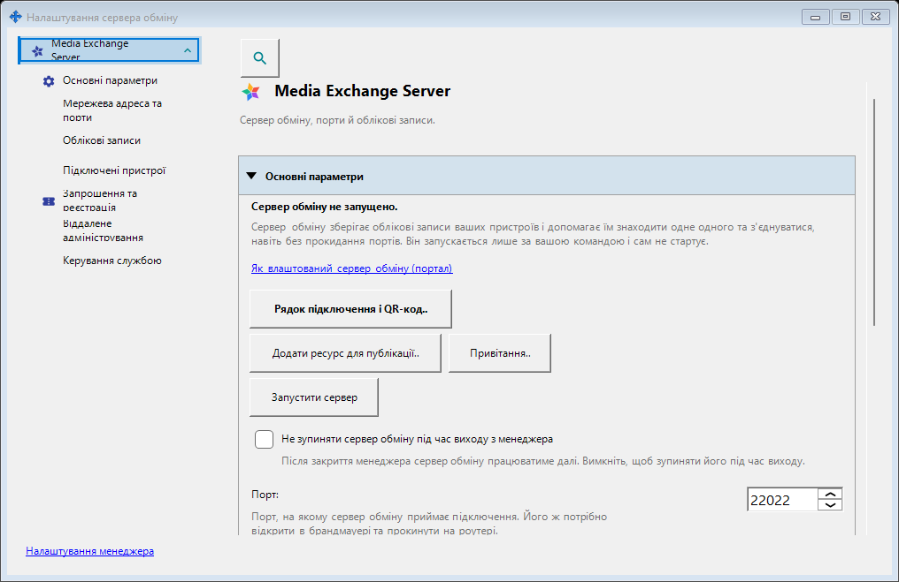
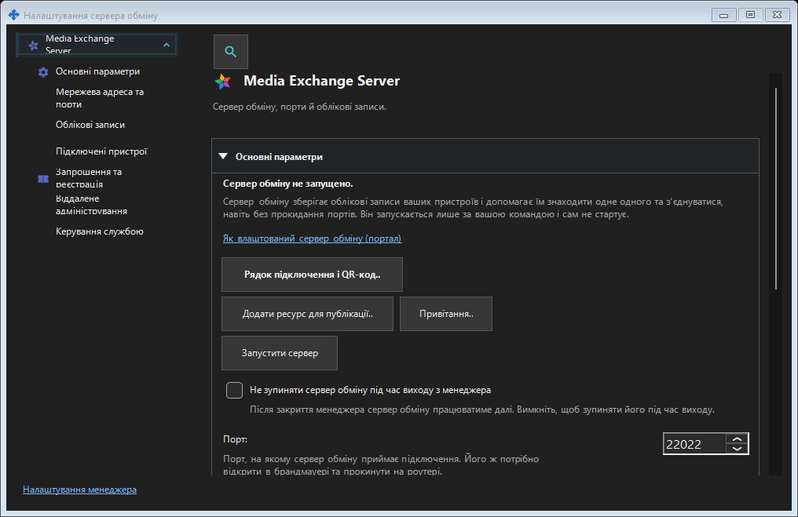

Налаштування сервера обміну
Призначення
Тут керують сервером обміну на цьому ПК: портом і зовнішньою адресою, сертифікатом TLS, обліковими записами, пристроями та запрошеннями, службою, забороною сну, журналами, віддаленим адмініструванням і аудитом. Вхід клієнта на віддалений сервер знаходиться в налаштуваннях менеджера.


Порядок дій
Відкрийте сервер із трея, завершення майстра або іншого вікна налаштувань. Спочатку перевірте сервер і його стан. Застосовуйте змінені групи окремими кнопками. Запуск, зупинка, обслуговування служби та зміна сертифіката зберігають свої підтвердження. Відкриття й закриття налаштувань не запускає й не зупиняє сервер.
Елементи вікна
Налаштування сервера обміну
Тут керують сервером обміну на цьому ПК: портом і зовнішньою адресою, сертифікатом TLS, обліковими записами, пристроями та запрошеннями, службою, забороною сну, журналами, віддаленим адмініструванням і аудитом. Вхід клієнта на віддалений сервер знаходиться в налаштуваннях менеджера. Відкрийте сервер із трея, завершення майстра або іншого вікна налаштувань. Спочатку перевірте сервер і його стан. Застосовуйте змінені групи окремими кнопками. Запуск, зупинка, обслуговування служби та зміна сертифіката зберігають свої підтвердження. Відкриття й закриття налаштувань не запускає й не зупиняє сервер.
Налаштування менеджера · Налаштування спільного доступу SFTP · Налаштування сервера обміну